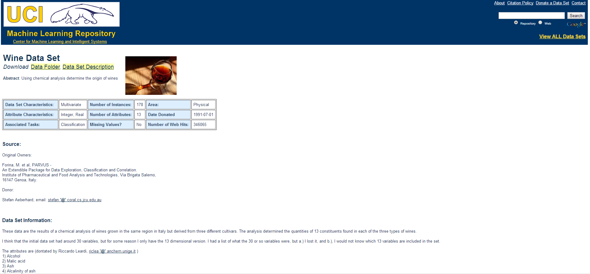

- Taken from https://archive.ics.uci.edu/ml/datasets/Wine aut 
Developing Data Product Course Project
Simple Linear Regression of Wine Quality Dataset
Macchiavalley
Wine Quality Datasets
Single Variable Linear Regression

3 select input, 1 plot, 1 summary, 1 downloadable output
a preditor, alcohol, pH
wine data set ( Red or White wine)
if you'd like, downloadable output available
Download Output as PDF, HTML or WORD
- Users can select the output( plot and summary) format

Output Sample
- PDF format